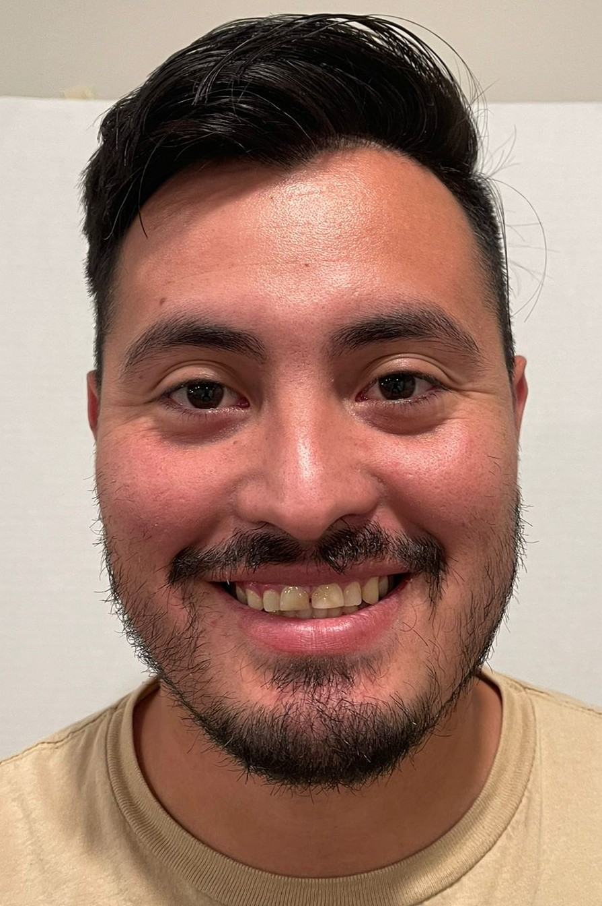

Dantto Elias Hermosilla Orellana | WDD 130
Hello! my name is Dantto it's a weird I know but I feel that is unique, my closed friends and brothers call me "moogle" or "Chilote". I was born in Santiago Chile, I served as a full time missionary in the Chile Santiago South Mission in the years 2014-2015 after that, I moved to Mendoza Argentina when I got married since 2017 until now. It is a beautiful place to visit and live.
I have been married for five years, my wifes names is Ivana. Also we have a beautiful daughter, her name is Ludmila, she is three years old. I decide to get a degree on aplied technology, web and computer programming. Desinging web pages it is something that call me to learn it and do it to the future.
I love to dance, see some movies and series on streaming plataforms, I like the anime,play the guitar,soccer and play some video games.
Also I decide to get a degree in web and computer programming because I found that i love this world of programming and I have the legacy from my Dad who is a programmer. Finally, I'm so greatful for this program pathway have been a blessing to me and to my family. i'm exited to know you and to learn with you.